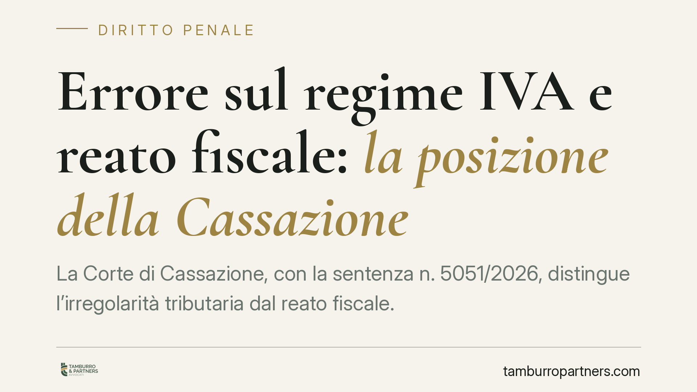

Errore sul regime IVA e reato fiscale: la posizione della Cassazione
La Corte di Cassazione, con la sentenza n. 5051/2026, distingue l'irregolarità tributaria dal reato fiscale. Applicare l'IVA ordinaria anziché il reverse charge non integra la dichiarazione fraudolenta se l'operazione commerciale è reale e veritiera. Un chiarimento rilevante per imprese e amministratori esposti a contestazioni penali e a sequestri preventivi non sempre fondati.

Il caso deciso dalla Cassazione
Un'impresa operante nel settore hi-tech aveva applicato l'IVA ordinaria in fatture relative a operazioni per le quali era invece previsto il meccanismo del *reverse charge* (inversione contabile), disciplinato dall'art. 17 del DPR 633/1973. In sintesi: in alcune cessioni di determinati beni tecnologici, l'imposta non deve essere addebitata dal fornitore ma assolta direttamente dal cessionario, che integra la fattura e la registra sia a debito sia a credito.
Sulla base di quell'errore, era stato ipotizzato il reato di dichiarazione fraudolenta mediante uso di fatture per operazioni inesistenti (art. 2 del D.lgs. 74/2000) e disposto un sequestro preventivo. La Cassazione, con la sentenza n. 5051/2026, ha escluso la sussistenza del reato.
Inquadramento normativo
L'art. 2 del D.lgs. 74/2000 punisce chi indica in dichiarazione elementi passivi fittizi avvalendosi di fatture o altri documenti relativi a operazioni inesistenti. Il perno della norma è la falsità dell'operazione: la fattura deve documentare uno scambio mai avvenuto, o avvenuto tra soggetti diversi, o per importi difformi dal reale.
Il *reverse charge* dell'art. 17 DPR 633/1973 è invece una modalità di assolvimento dell'imposta. Sbagliarne l'applicazione incide sul "come" si versa l'IVA, non sull'esistenza dell'operazione sottostante. La Corte valorizza proprio questa differenza: se la cessione è reale e correttamente rappresentata nella sua sostanza economica, non vi è alcuna "inesistenza" da sanzionare penalmente.
Ne consegue un principio netto: l'errore sul regime IVA, quando l'operazione è genuina e veritiera, resta una irregolarità tributaria. È materia di accertamento e recupero da parte dell'Agenzia delle Entrate, non di contestazione penale ai sensi dell'art. 2.
Perché non regge il sequestro preventivo
Il sequestro preventivo finalizzato alla confisca presuppone il *fumus* del reato, cioè indizi concreti della sua sussistenza. Se manca l'elemento oggettivo — l'operazione inesistente — viene meno il presupposto stesso della misura cautelare reale.
La Cassazione chiarisce che la mera errata qualificazione del regime IVA non può fondare il vincolo cautelare. Diversamente, ogni difformità tra dichiarazione e regola tributaria si trasformerebbe automaticamente in ipotesi di frode, con un'evidente forzatura della fattispecie penale.
Implicazioni pratiche per imprese e amministratori
Per le srl e gli imprenditori del settore hi-tech, spesso interessati da operazioni soggette a inversione contabile, la pronuncia offre un argomento difensivo importante. Un errore nella scelta del regime IVA — frequente in comparti con normativa tecnica e mutevole — non equivale a una condotta fraudolenta.
Restano però le conseguenze tributarie: l'Agenzia delle Entrate può recuperare l'imposta e applicare sanzioni amministrative. Il confine tracciato dalla Corte separa il piano penale da quello fiscale, ma non azzera il rischio economico dell'errore.
È inoltre opportuno ricordare che la valutazione resta legata al caso concreto. La genuinità dell'operazione è il presupposto della decisione: dove emergano indizi di simulazione, sovrafatturazione o interposizione fittizia, il quadro cambia radicalmente.
Cosa fare in concreto
- Verificate con attenzione le operazioni soggette a reverse charge, distinguendole da quelle in regime ordinario, prima dell'emissione delle fatture.
- Documentate la realtà economica di ogni scambio: contratti, consegne, pagamenti tracciabili. La prova della genuinità è la miglior difesa.
- Distinguete i due piani: di fronte a una contestazione, valutate separatamente il profilo tributario e quello penale, che seguono regole e presupposti diversi.
- Reagite tempestivamente a un sequestro preventivo fondato su un mero errore di regime IVA: la sentenza n. 5051/2026 offre elementi per contestarne il presupposto.
- Consigliamo di affiancare una revisione contabile a una valutazione legale prima di aderire a definizioni o ravvedimenti che potrebbero incidere sul procedimento penale.
---
*Contributo informativo a cura di Tamburro & Partners - Avv. Giuseppe Tamburro. Non costituisce parere legale.*
Ogni condominio ha una storia a sé.
Se gestisci un'amministrazione e vuoi un confronto su una specifica questione condominiale, scrivi allo studio. Ti rispondiamo entro un giorno lavorativo.